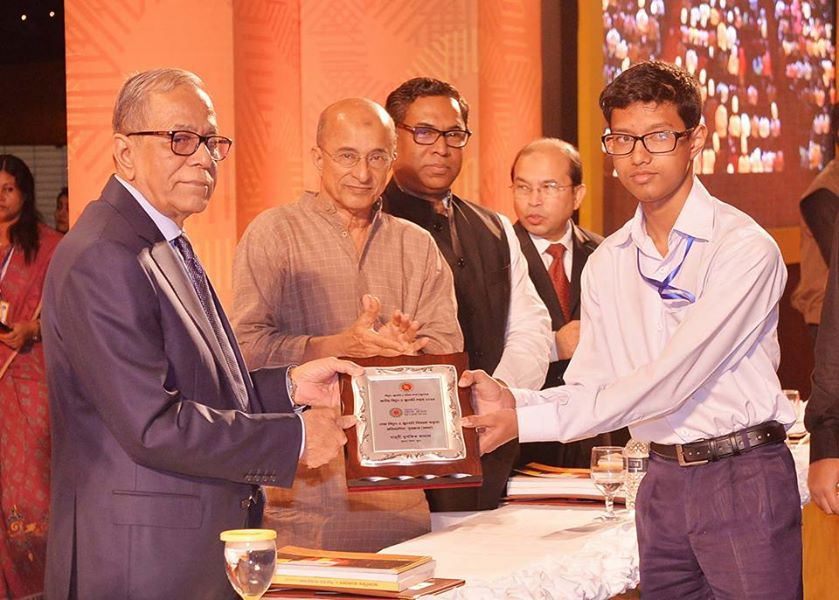
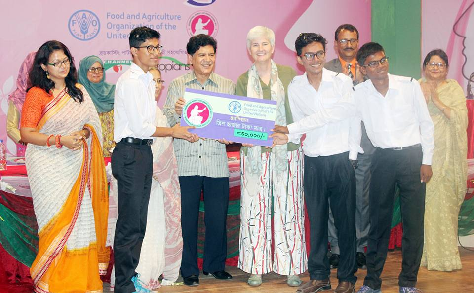
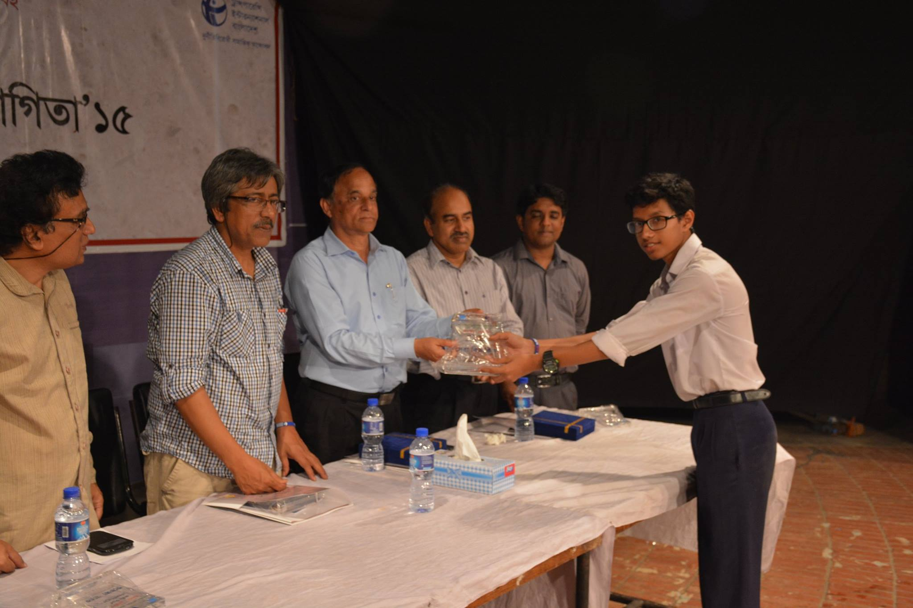

Champion at “National Energy Day-Speech Competition”, awarded by the honorable president of Bangladesh (2015).

Champion and Best-speaker at FAO organized International Wemen’s day debate festival, awarded by County Director of FAO (2017).

Champion , Debater of the Tournament and Debater of the Final at TIB-JUDO inter school debate tournament (2015).

Debater of the Tournament at Annashen Fundraiser 2020
Finalist: CSDS Fundraiser 2020 Format: British Parliamentary, Category: Open
বিজয় দিবস উপলক্ষে BUETDC আয়োজিত প্রদর্শনী বিতর্ক (2019)